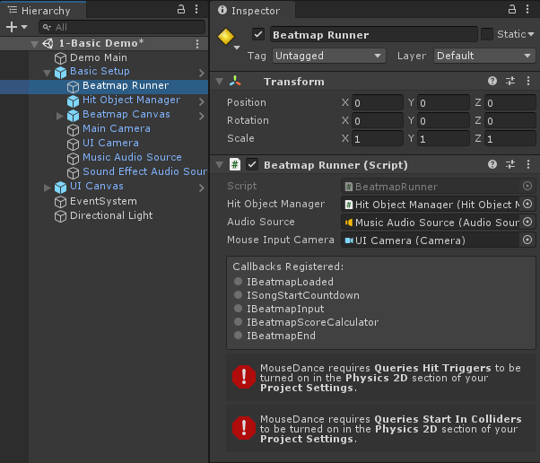

Hit Circles
Hit Circle Prefabs are composed of mostly Unity UI Images.
Creating a Hit Circle Prefab Variant
Since they are Unity UI Images, it's straightforward to swap out the image files used for something custom.
An easy way to go about this is to make a Prefab Variant of the Hit Circle Prefab, and override only the properties you need to.
Tip
Images used here should be white-coloured. That makes it easy for the game to give it any colour as needed by the Beatmap (the previews shown in the screenshots use yellow only for illustrative purposes).
The prefab has 4 parts:
| 1. Border |
The border is separate from the circle because this can be colored differently from the circle itself. |
| 2. Circle |
The inside of the circle. This is separate from the border because this can be colored differently from the border. |
| 3. Combo Counter Text |
The number displayed on the Hit Circle. The important thing to note here is that it uses `Auto Size` so that it can be properly sized when the Hit Circle is resized in-game. |
| 4. Approach Circle |
The large circle that slowly shrinks for indicating the Hit Circle's hit time. |
You can, for example, change the image used for any of the parts (or the font, in the case of the Combo Counter Text) and then save that into the Prefab Variant.
Previewing Circle Size
If you need to check how your Hit Circle looks like for each Circle Size value, you can use the preview buttons in the Inspector.
Remember that Circle Size is a difficulty setting, so higher values mean more difficulty. In this case, higher Circle Size value means smaller Hit Object.
Border Scale Adjust
If the border image doesn't quite fit in certain sizes, you can adjust the border using the Border Scale At Smallest Circle Size property.
At the default value of 1.0 for Border Scale At Smallest Circle Size:
Notice the large gap between the circle and its border when at Circle Size 7 and beyond.
Tip
The problem illustrated here is already fixed and no longer an issue in the demo's prefabs. This section is just to explain the thought process behind how it was fixed in case you are using your own custom images and is facing the same problem.
This happens because if you look at the source image for the border, it has some drop shadow effects outside the circle.
Note
The screenshots here make the Hit Circles look pixelated because they are highly zoomed-in.
So technically, when the Hit Circle diameter is at 64 pixels (radius of 32 pixels), the border image's diameter has to be sized more than 64 pixels, to ensure that the drop shadow effects are outside the Hit Circle.
That's why the RectTransform has -5 on all edges (negative value means it goes beyond its parent container). So it is sized 5 pixels larger than the actual Hit Circle on all sides:
For reference, here is what it would have looked like without that -5 adjustment (when the border image's diameter is same as the circle image, at exactly 64 pixels):
So the -5 adjustment is really needed here.
The problem is that it doesn't work well when the Hit Circle gets smaller. The -5 values in the RectTransform are in pixels. So it's maintaining that 5 pixel distance even at extremely small Hit Circle sizes, where the drop shadow effect no longer needs 5 pixels.
The solution is to have additional tweaking to the size when the Hit Circle gets smaller. That is what Border Scale At Smallest Circle Size property is for. It adjusts the RectTransform's scale.
With Border Scale At Smallest Circle Size set to 0.65, the problem is fixed:
Note
You can think of the the Border Scale as a percentage, so 0.65 should be read as 65%, meaning, at Circle Size 10 (which is at about 20 pixels in diameter), we reduce the border image's size even further, down to 65% of its original size.
The scale adjustment is only applied when the Circle Size given is small enough, so it doesn't affect normal sizes. You can adjust exactly when the Border Scale starts being applied using the Start Border Scale After property.
With the default value of 5 in Start Border Scale After, that means border scale adjustment only happens after Circle Size 5 (i.e. Circle Sizes 6 to 10). This adjustment is applied linearly:
| Circle Size | Scale applied to Border Image |
|---|---|
| 5 | 1.0 |
| 6 | 0.93 |
| 7 | 0.86 |
| 8 | 0.79 |
| 9 | 0.72 |
| 10 | 0.65 |
Testing the Prefab Variant
To make use of your Prefab Variant, you can modify your HitObjectSet so it uses your Prefab Variant instead of the original.
The default HitObjectSet used by the demo scenes is in the MouseDance/Prefabs folder.
Hit Detection
User-input detection is handled by the BeatmapRunner. All the Hit Circle needs is to have a Collider2D so that raycasts will catch it.
Caution
Right now, only CircleCollider2D and BoxCollider2D is supported.
Since the only job of the Hit Circle's Collider is to be clicked on, it will not interact with the Physics system. This is mostly ensured by setting it as a Trigger.
Since the Colliders are set up as Triggers, the Queries Hit Triggers setting needs to be turned on in the Physics 2D section of Project Settings.
The Beatmap Runner Inspector will alert you with an error message if it's turned off.
